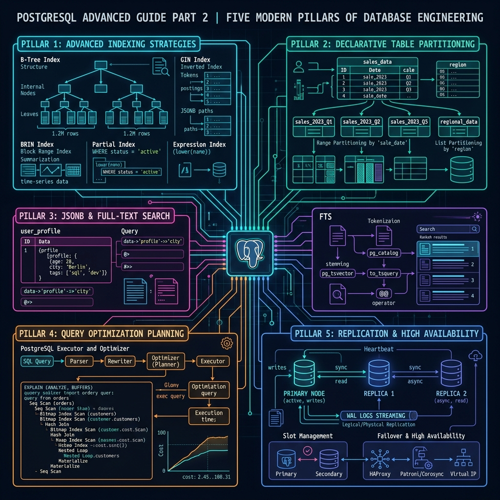
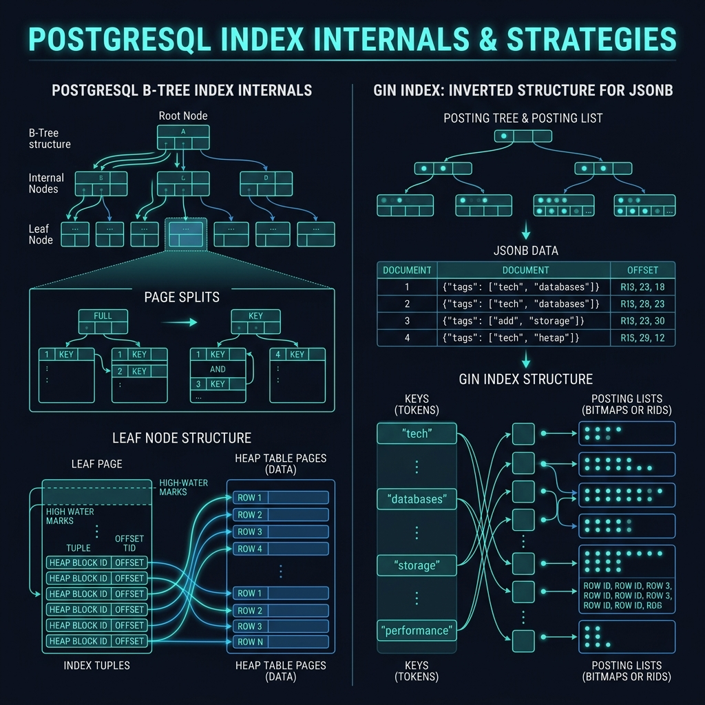
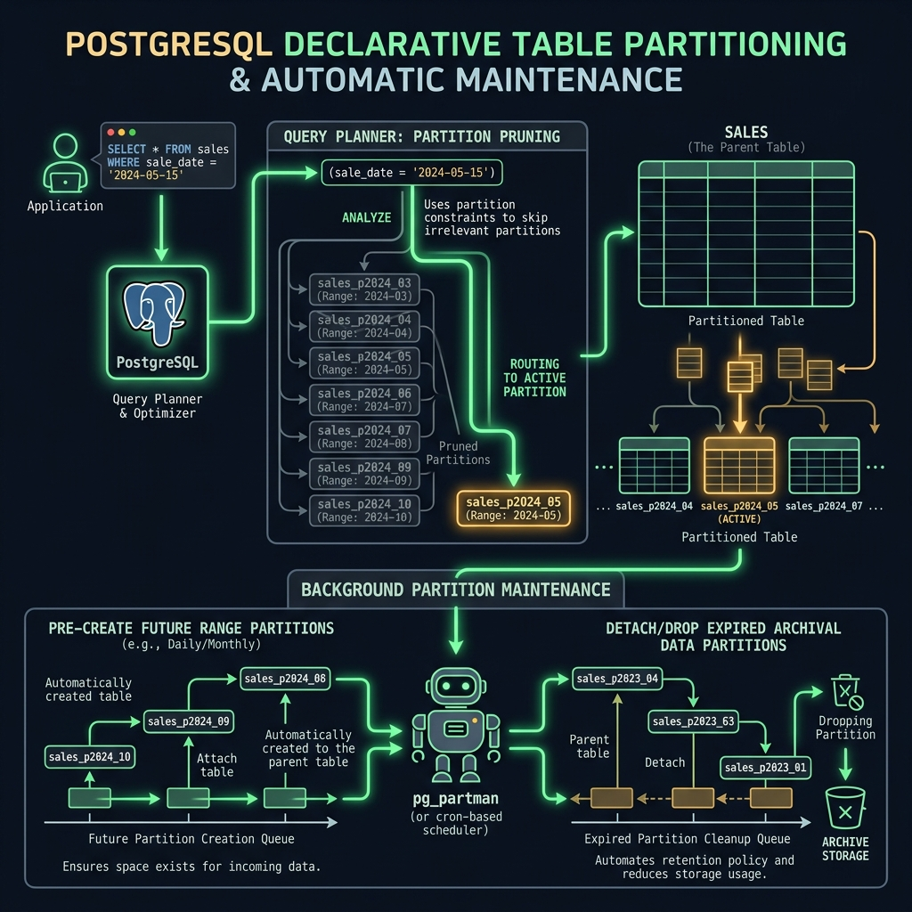
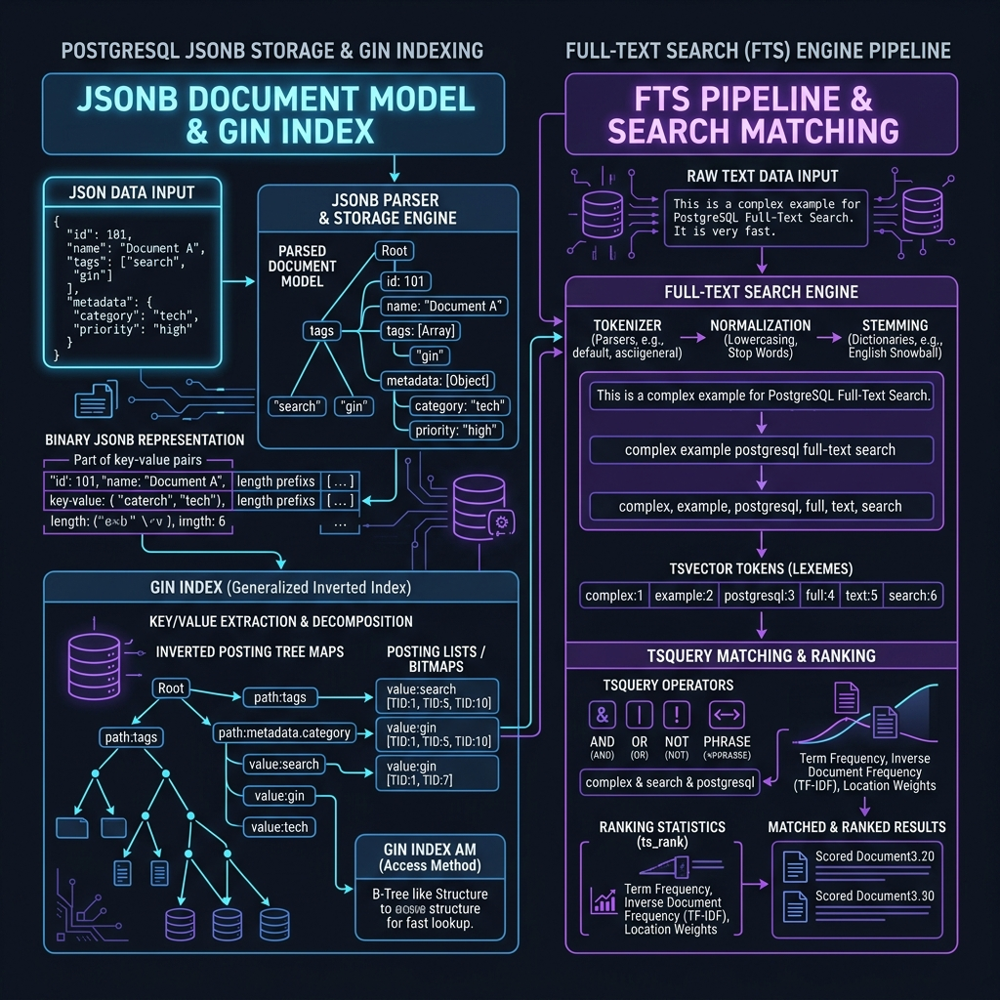
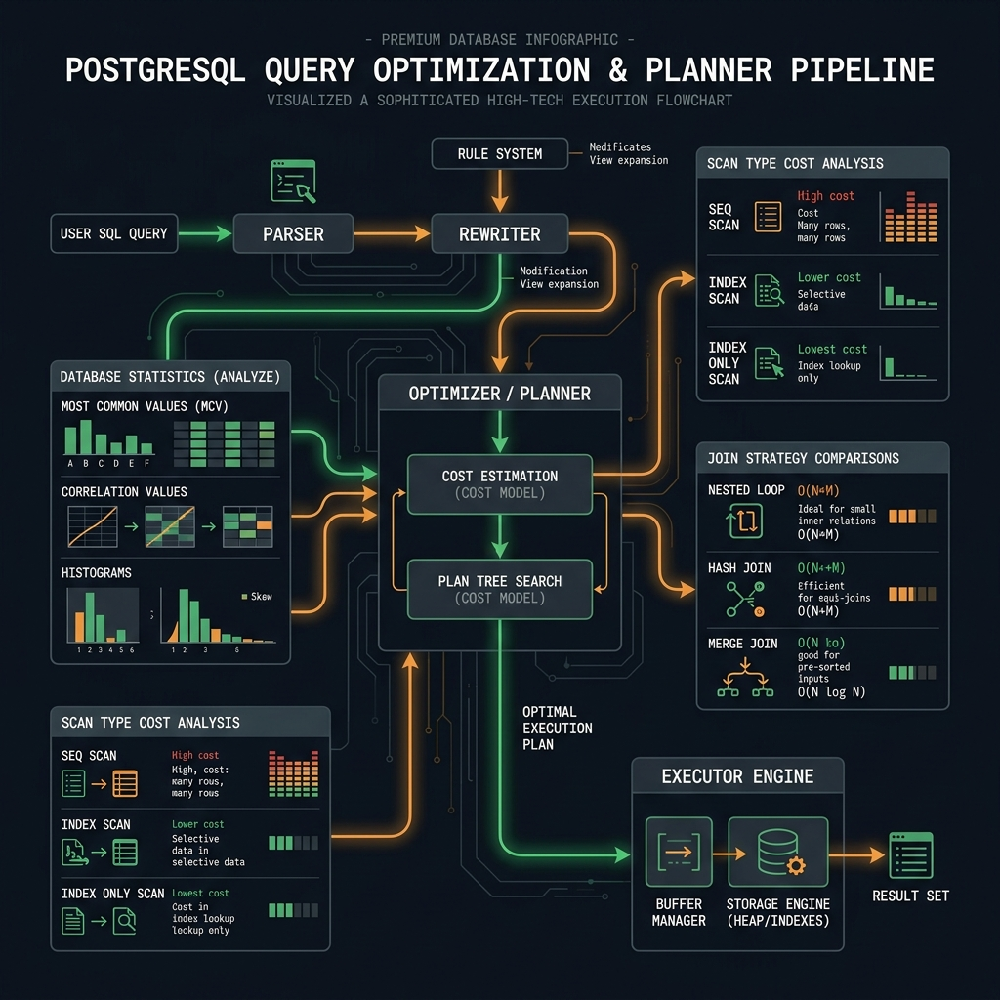
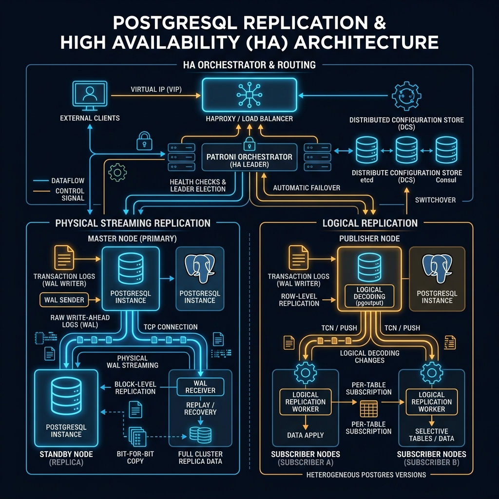

Tiếp nối Phần 1 (PL/pgSQL, CTE, MVCC/RLS), Phần 2 đi sâu vào: Indexing Strategies (8 loại index, partial/expression/covering index, index internals), Table Partitioning (range/list/hash với automatic partition maintenance), JSONB & Full-Text Search (GIN index, tsvector/tsquery, schema-less patterns), Query Optimization (EXPLAIN ANALYZE, statistics, query rewrites), và Replication & HA (streaming, logical replication, CDC với pgoutput).

B-Tree, Hash, GIN, GiST, BRIN, Bloom filter. Partial/expression index. Covering index và Index-Only Scan. Index bloat và maintenance.
Declarative partitioning: RANGE, LIST, HASH. Partition pruning, sub-partitioning, foreign key constraints, automatic maintenance với pg_partman.
JSONB operators, GIN indexes, jsonpath, tsvector/tsquery, ranking functions, schema-less document patterns trong production.
EXPLAIN ANALYZE đọc execution plan, statistics và planner configuration, query rewrites, parallel query, pg_hint_plan.
Streaming replication setup, logical replication với publications/subscriptions, CDC (Change Data Capture), failover automation.
PostgreSQL cung cấp nhiều loại index khác nhau, mỗi loại được thiết kế cho một kiểu truy vấn hoặc kiểu dữ liệu cụ thể. Chọn đúng loại index có thể cải thiện query từ sequential scan O(N) xuống index scan O(log N) hoặc thậm chí bitmap index scan cho range queries. Hiểu khi nào dùng loại index nào là kỹ năng phân biệt DBA junior và senior.
Bảng so sánh các loại Index
| Loại | Tối ưu cho | Operators | Khi nào dùng | Lưu ý |
|---|---|---|---|---|
B-Tree | Equality, range, sort | =, <, >, BETWEEN, LIKE 'abc%' | Default — hầu hết mọi trường hợp | Tốt nhất cho ordered data |
Hash | Equality only | = | Chỉ equality, không cần sort | PG10+: crash-safe; nhỏ hơn B-Tree |
GIN | Composite values | @>, <@, ??, @? | JSONB, array, tsvector (FTS) | Slow to build, fast to search |
GiST | Geometric, fuzzy | &&, @>, <<|, pg_trgm | PostGIS, range types, trigram search | Lossy — có thể false positive |
BRIN | Large ordered tables | =, <, >, BETWEEN | Time-series, log tables, IoT | Rất nhỏ (128 bytes/range), ít hiệu quả với random data |
SP-GiST | Space-partitioned | Geometric, network | IP ranges, coordinates, text prefix | Tốt cho non-balanced partitioned spaces |
Bloom | Multi-column equality | = | Nhiều cột equality, ít cardinality | False positive — cần recheck; ít dùng |
Ba bảng với đặc điểm rất khác nhau cần được index đúng cách: (1) bảng orders 50M rows, query theo date range; (2) bảng events 500M rows IoT, time-series; (3) bảng products với JSONB attributes. Dùng sai loại index gây lãng phí disk và tốc độ không cải thiện.
-- ── Case 1: orders — B-Tree cho equality + range ───────────────────── CREATE TABLE orders ( order_id BIGSERIAL PRIMARY KEY, customer_id BIGINT NOT NULL, status TEXT NOT NULL, -- 'pending','confirmed','shipped' total NUMERIC NOT NULL, created_at TIMESTAMPTZ NOT NULL DEFAULT NOW() ); -- B-Tree: default, tốt cho range + equality + sort CREATE INDEX idx_orders_created ON orders (created_at); CREATE INDEX idx_orders_customer ON orders (customer_id, created_at DESC); -- Composite index: (customer_id, created_at DESC) phục vụ: -- SELECT * FROM orders WHERE customer_id = 42 ORDER BY created_at DESC LIMIT 20 -- Index Only Scan vì cả hai cột đều trong index -- ── Case 2: events — BRIN cho time-series 500M rows ────────────────── CREATE TABLE device_events ( event_id BIGSERIAL PRIMARY KEY, device_id BIGINT NOT NULL, event_type TEXT NOT NULL, payload JSONB, ts TIMESTAMPTZ NOT NULL DEFAULT NOW() -- tự nhiên tăng dần ); -- BRIN: cực nhỏ, hiệu quả với sequential data -- pages_per_range=64 (default 128): range nhỏ hơn = chính xác hơn CREATE INDEX idx_events_ts_brin ON device_events USING BRIN (ts) WITH (pages_per_range = 64); -- So sánh kích thước B-Tree vs BRIN (thực tế): -- B-Tree trên 500M rows: ~15 GB -- BRIN trên 500M rows: ~200 KB (75,000× nhỏ hơn!) -- ── Case 3: GIN cho JSONB ───────────────────────────────────────────── CREATE TABLE products ( id BIGSERIAL PRIMARY KEY, name TEXT NOT NULL, attributes JSONB NOT NULL -- {"color":"red","size":"M","brand":"Nike"} ); -- GIN index: index tất cả keys và values trong JSONB -- Hỗ trợ: @>, ?, ?|, ?&, @?, @@ CREATE INDEX idx_products_gin ON products USING GIN (attributes); -- Query tận dụng GIN: SELECT * FROM products WHERE attributes @> '{"color":"red","size":"M"}'; -- containment SELECT * FROM products WHERE attributes ? 'discount'; -- key exists -- GIN jsonb_path_ops: nhỏ hơn nhưng chỉ hỗ trợ @> -- GIN jsonb_ops (default): lớn hơn, hỗ trợ tất cả operators CREATE INDEX idx_products_gin_path ON products USING GIN (attributes jsonb_path_ops); -- ── Case 4: GiST cho pg_trgm (fuzzy search) ────────────────────────── CREATE EXTENSION IF NOT EXISTS pg_trgm; CREATE INDEX idx_products_name_trgm ON products USING GiST (name gist_trgm_ops); -- Query fuzzy search với trigram similarity: SELECT name, SIMILARITY(name, 'iphon') AS sim FROM products WHERE name % 'iphon' -- similarity >= pg_trgm.similarity_threshold (default 0.3) ORDER BY sim DESC LIMIT 10; -- Hoặc GIN cho pg_trgm (nhanh hơn GiST với LIKE/ILIKE): CREATE INDEX idx_products_name_gin_trgm ON products USING GIN (name gin_trgm_ops); -- Hỗ trợ: LIKE '%abc%', ILIKE, SIMILAR TO
BRIN chỉ hiệu quả khi data physically correlated với cột được index — tức là data insert theo thứ tự cột đó (timestamp, serial ID). Nếu data random (UUID, hash), BRIN không giúp ích gì. GIN vs GiST: GIN index nhanh hơn khi search, chậm hơn khi build/update. GiST nhanh hơn khi update, chậm hơn search. Với pg_trgm: GIN cho LIKE/ILIKE, GiST cho similarity operators (<->, %). jsonb_path_ops nhỏ hơn 20–30% so với default jsonb_ops nhưng chỉ support @> và jsonpath — phù hợp khi chỉ cần containment query.
Bảng orders có 50M rows nhưng 90% là status='delivered' — application gần như chỉ query pending và processing (khoảng 500K rows). Index đầy đủ trên status tốn hàng GB và scan nhiều rows không cần thiết. Partial index chỉ index subset rows thực sự cần, nhỏ hơn 10–100× và nhanh hơn.
-- ── Partial Index: chỉ index unprocessed orders ────────────────────── -- Full index: 50M rows → ~2GB -- Partial index: 500K rows → ~20MB (100× nhỏ hơn!) CREATE INDEX idx_orders_pending ON orders (created_at) WHERE status IN ('pending', 'processing'); -- predicate -- Query phải match predicate để dùng index: -- ✅ Dùng partial index: SELECT * FROM orders WHERE status = 'pending' AND created_at < NOW() - INTERVAL '1 hour' ORDER BY created_at LIMIT 100; -- ✅ Partial index cho unique email chỉ với active users: CREATE UNIQUE INDEX idx_users_email_active ON users (LOWER(email)) -- expression index WHERE deleted_at IS NULL; -- partial: chỉ active users -- Cho phép: soft-deleted users cùng email với active user -- ── Expression Index: index trên computed expression ───────────────── -- Vấn đề: query case-insensitive email nhưng cột lưu mixed case -- Full scan vì LOWER(email) không có index: -- SELECT * FROM users WHERE LOWER(email) = 'alice@example.com' → SeqScan! -- Expression index: index kết quả của LOWER(email) CREATE INDEX idx_users_email_lower ON users (LOWER(email)); -- Bây giờ query dùng index: SELECT * FROM users WHERE LOWER(email) = 'alice@example.com'; -- → Index Scan on idx_users_email_lower ✓ -- Expression index trên JSON path: CREATE INDEX idx_orders_metadata_region ON orders ((metadata->>'region')); -- double parens: expression SELECT * FROM orders WHERE metadata->>'region' = 'VN'; -- → Index Scan ✓ (thay vì scan toàn bộ JSONB) -- Expression index với date truncation (common pattern): CREATE INDEX idx_orders_month ON orders (DATE_TRUNC('month', created_at)); -- Expression index cho computed column thay thế: -- Thay vì: WHERE EXTRACT(YEAR FROM created_at) = 2024 -- Dùng: WHERE created_at >= '2024-01-01' AND created_at < '2025-01-01' -- → B-Tree index hiệu quả hơn expression index với range -- ── Concurrent Index Build (không lock table) ───────────────────────── CREATE INDEX CONCURRENTLY idx_orders_customer_concurrent ON orders (customer_id, created_at DESC); -- CONCURRENTLY: build index mà không lock table -- Chậm hơn 2-3× nhưng không block reads/writes -- Cần dùng trong production khi table đang có traffic -- Verify index được sử dụng: EXPLAIN(ANALYZE, BUFFERS) SELECT * FROM orders WHERE status = 'pending' AND created_at < NOW() - INTERVAL '1 hour'; -- Expected: "Index Scan using idx_orders_pending on orders"
Partial index quy tắc vàng: nếu query luôn có cùng một WHERE condition (status = 'active', deleted_at IS NULL), đó là ứng cử viên tốt cho partial index predicate. Expression index: function trong WHERE clause phải là IMMUTABLE (LOWER, UPPER, TO_CHAR...) để có thể index. VOLATILE functions (NOW(), RANDOM()) không thể index. CREATE INDEX CONCURRENTLY bắt buộc trong production — không bao giờ CREATE INDEX thường trên table đang có traffic. CONCURRENTLY có một limitation: nếu build fail giữa chừng, index ở trạng thái INVALID — cần DROP INDEX CONCURRENTLY và tạo lại.
Query SELECT customer_id, total FROM orders WHERE created_at BETWEEN ... ORDER BY created_at dùng Index Scan nhưng vẫn phải fetch heap page để lấy total. Nếu total được INCLUDE vào index, query có thể thực hiện Index-Only Scan — không cần vào heap page, nhanh hơn đáng kể với selective queries.
-- ── Không có covering index: phải heap fetch ───────────────────────── CREATE INDEX idx_orders_date_only ON orders (created_at); EXPLAIN(ANALYZE, BUFFERS) SELECT customer_id, total FROM orders WHERE created_at BETWEEN '2024-01-01' AND '2024-01-31'; -- Plan: Index Scan on idx_orders_date_only -- → Heap Fetches: 50000 ← phải vào heap lấy customer_id, total -- ── Covering Index với INCLUDE ──────────────────────────────────────── -- INCLUDE columns: được lưu trong index leaf pages -- không tham gia vào index key (không dùng cho ORDER BY, WHERE) -- chỉ có trong index-only scan payload CREATE INDEX idx_orders_date_cover ON orders (created_at) INCLUDE (customer_id, total); -- ← "covering" columns EXPLAIN(ANALYZE, BUFFERS) SELECT customer_id, total FROM orders WHERE created_at BETWEEN '2024-01-01' AND '2024-01-31'; -- Plan: Index Only Scan on idx_orders_date_cover -- → Heap Fetches: 0 ← KHÔNG cần vào heap! -- → Buffers: hit=120 (chỉ đọc index pages) -- ── Điều kiện để Index-Only Scan hoạt động ─────────────────────────── -- 1. Tất cả columns trong SELECT phải có trong index (key + INCLUDE) -- 2. Visibility map phải "all-visible" cho pages cần scan -- (đảm bảo bằng VACUUM/autovacuum đủ thường xuyên) -- 3. pg_stat_user_tables.idx_scan: confirm index được dùng -- Check Index-Only Scan hit rate: SELECT indexrelname, idx_scan, idx_tup_read, idx_tup_fetch, -- heap fetches ROUND(idx_tup_fetch::NUMERIC / NULLIF(idx_tup_read, 0) * 100, 1) AS heap_fetch_pct FROM pg_stat_user_indexes WHERE relname = 'orders' ORDER BY idx_scan DESC; -- Nếu heap_fetch_pct > 50% cho covering index → VACUUM thiếu -- ── Covering index cho pagination (keyset pagination) ──────────────── CREATE INDEX idx_orders_keyset ON orders (created_at DESC, order_id DESC) INCLUDE (customer_id, status, total); -- Keyset pagination (hiệu quả hơn OFFSET rất nhiều): SELECT order_id, customer_id, status, total, created_at FROM orders WHERE (created_at, order_id) < ('2024-01-15 12:00:00', 50000) -- cursor ORDER BY created_at DESC, order_id DESC LIMIT 20; -- → Index Only Scan, O(log N + limit) thay vì O(N) với OFFSET
Index-Only Scan yêu cầu Visibility Map: PostgreSQL cần biết row có visible với current transaction mà không cần check heap. VACUUM đánh dấu pages là "all-visible" trong VM. Nếu autovacuum không đủ nhanh, heap_fetch sẽ tăng. Monitor idx_tup_fetch/idx_tup_read. INCLUDE vs làm key: INCLUDE columns không thể dùng trong WHERE hoặc ORDER BY, nhưng nhỏ hơn (không cần unique, không cần support tree traversal). Không nên INCLUDE quá nhiều columns — index sẽ to, update chậm. Keyset pagination (cursor-based) hiệu quả hơn OFFSET/LIMIT rất nhiều vì OFFSET vẫn phải skip N rows, còn keyset dùng index seek trực tiếp.

-- ── 1. Unused indexes (ăn disk + tốn I/O khi write) ───────────────── SELECT schemaname, tablename, indexname, idx_scan AS times_used, ROUND(pg_relation_size(indexrelid) / 1e6, 1) AS index_mb, pg_get_indexdef(indexrelid) AS definition FROM pg_stat_user_indexes JOIN pg_index USING (indexrelid) WHERE idx_scan = 0 -- chưa bao giờ được dùng AND NOT indisunique -- không phải unique constraint AND NOT indisprimary -- không phải PK ORDER BY pg_relation_size(indexrelid) DESC; -- Chú ý: reset sau pg_stat_reset() hoặc server restart -- Chờ đủ thời gian observe (>1 tuần) trước khi drop -- ── 2. Duplicate / Redundant indexes ───────────────────────────────── SELECT t.relname AS table_name, ix1.relname AS index1, ix2.relname AS index2, pg_get_indexdef(i1.indexrelid) AS def1, pg_get_indexdef(i2.indexrelid) AS def2 FROM pg_index i1 JOIN pg_index i2 ON i1.indrelid = i2.indrelid AND i1.indexrelid < i2.indexrelid -- tránh tự so sánh AND i1.indkey::TEXT LIKE i2.indkey::TEXT || ' %' -- i2 là prefix của i1 JOIN pg_class t ON t.oid = i1.indrelid JOIN pg_class ix1 ON ix1.oid = i1.indexrelid JOIN pg_class ix2 ON ix2.oid = i2.indexrelid WHERE t.relnamespace = 'public'::regnamespace ORDER BY t.relname; -- VD: idx(a,b,c) và idx(a,b) → idx(a,b) là redundant nếu selectivity tốt -- ── 3. Index bloat estimation ──────────────────────────────────────── SELECT schemaname || '.' || tablename AS table_name, indexname, ROUND(pg_relation_size(indexrelid) / 1e6, 1) AS current_mb, ROUND(stat.idx_blks_hit::NUMERIC / NULLIF(stat.idx_blks_read + stat.idx_blks_hit, 0) * 100, 1) AS cache_hit_pct FROM pg_stat_user_indexes ui JOIN pg_statio_user_indexes stat USING (indexrelid) WHERE pg_relation_size(indexrelid) > 10e6 -- > 10MB ORDER BY pg_relation_size(indexrelid) DESC; -- ── 4. REINDEX CONCURRENTLY (rebuild index không lock) ─────────────── REINDEX INDEX CONCURRENTLY idx_orders_date_cover; -- Dùng sau heavy DELETE/UPDATE để thu hồi bloat -- PG12+: CONCURRENTLY không lock table -- ── 5. Statistics correlation: quan trọng cho BRIN và planner ──────── SELECT attname AS column_name, correlation, -- -1 (reverse sorted) to 1 (sorted) n_distinct, -- positive = absolute count, negative = fraction most_common_vals, most_common_freqs FROM pg_stats WHERE tablename = 'orders' ORDER BY |correlation| DESC; -- correlation gần 1 hay -1 → BRIN rất hiệu quả -- correlation gần 0 → BRIN kém hiệu quả, dùng B-Tree -- n_distinct = -0.05 → ~5% distinct values (low cardinality)
Unused index detection: pg_stat_user_indexes được reset khi restart PostgreSQL. Luôn observe đủ lâu (ít nhất 1 tuần, bao gồm peak traffic) trước khi quyết định drop. Correlation: giá trị gần 1 hoặc -1 nghĩa là dữ liệu trong cột được lưu vật lý theo thứ tự tương ứng — BRIN sẽ rất hiệu quả. pg_stats.correlation là thông tin quan trọng nhất để quyết định chọn B-Tree hay BRIN. REINDEX CONCURRENTLY (PG12+) rebuild index không block, nhưng chiếm thêm disk space tạm thời. Sau rebuild, space được thu hồi. Nên chạy định kỳ cho indexes bị bloat từ heavy UPDATE/DELETE workloads.
Table Partitioning (phân vùng bảng) chia một bảng logic lớn thành nhiều bảng vật lý nhỏ hơn (partitions) dựa trên một partition key. PostgreSQL hỗ trợ declarative partitioning từ phiên bản 10 — chỉ cần khai báo strategy và PostgreSQL tự quản lý routing INSERT vào đúng partition, và partition pruning (chỉ scan partitions cần thiết trong query).
Lợi ích: (1) Query performance — partition pruning loại bỏ phần lớn data cần scan, (2) Maintenance — DROP/DETACH partition cũ nhanh hơn DELETE nhiều triệu rows, (3) Parallel query — nhiều partitions có thể scan song song.
| Strategy | Partition Key | Use Case | Ví dụ |
|---|---|---|---|
RANGE | Continuous values | Time-series, date-based data | orders per month, logs per day |
LIST | Discrete values | Region, country, status | orders by country code |
HASH | Even distribution | Sharding, parallel processing | users by hash(user_id) % N |
Composite | Multi-level | Region + time | Range by year → Hash by customer |
Bảng audit_logs nhận 5 triệu rows/ngày, cần giữ 2 năm data (3.6 tỷ rows tổng). Query thường chỉ đọc data của 1–7 ngày gần nhất. Cần: tự động tạo partition hàng tháng, dễ dàng DROP partition cũ (thay vì DELETE chậm), và index riêng cho từng partition.
-- ── Setup: Declarative Range Partitioning ──────────────────────────── CREATE TABLE audit_logs ( log_id BIGSERIAL, tenant_id UUID NOT NULL, action TEXT NOT NULL, entity_type TEXT NOT NULL, entity_id BIGINT, details JSONB, created_at TIMESTAMPTZ NOT NULL DEFAULT NOW(), PRIMARY KEY (log_id, created_at) -- partition key phải trong PK ) PARTITION BY RANGE (created_at); -- DEFAULT partition: nhận data không khớp partition nào -- Quan trọng: tránh "no partition" error khi chưa tạo kịp CREATE TABLE audit_logs_default PARTITION OF audit_logs DEFAULT; -- Tạo partitions thủ công cho các tháng cụ thể CREATE TABLE audit_logs_2024_01 PARTITION OF audit_logs FOR VALUES FROM ('2024-01-01') TO ('2024-02-01'); CREATE TABLE audit_logs_2024_02 PARTITION OF audit_logs FOR VALUES FROM ('2024-02-01') TO ('2024-03-01'); -- Index được tạo trên từng partition riêng lẻ (tốt cho vacuum, rebuild) CREATE INDEX ON audit_logs_2024_01 (tenant_id, created_at DESC); CREATE INDEX ON audit_logs_2024_02 (tenant_id, created_at DESC); -- Hoặc: tạo index trên parent → tự tạo trên tất cả partitions CREATE INDEX idx_audit_tenant_date ON audit_logs (tenant_id, created_at DESC); -- ── Function tự động tạo partition tháng tới ───────────────────────── CREATE OR REPLACE FUNCTION create_audit_partition(target_month DATE) RETURNS VOID LANGUAGE plpgsql AS $$ DECLARE v_start DATE := DATE_TRUNC('month', target_month); v_end DATE := v_start + INTERVAL '1 month'; v_name TEXT := FORMAT('audit_logs_%s', TO_CHAR(v_start, 'YYYY_MM')); v_exists BOOLEAN; BEGIN SELECT EXISTS( SELECT 1 FROM pg_class WHERE relname = v_name ) INTO v_exists; IF NOT v_exists THEN EXECUTE FORMAT( 'CREATE TABLE %I PARTITION OF audit_logs FOR VALUES FROM (%L) TO (%L)', v_name, v_start, v_end ); -- Tạo index ngay sau khi tạo partition EXECUTE FORMAT( 'CREATE INDEX ON %I (tenant_id, created_at DESC)', v_name ); RAISE NOTICE 'Created partition: % for range [%, %)', v_name, v_start, v_end; END IF; END; $$; -- Gọi hàng tháng qua pg_cron hoặc external scheduler: SELECT create_audit_partition(NOW() + INTERVAL '1 month'); -- ── Retire old partitions (nhanh hơn DELETE nhiều triệu rows) ──────── -- Option 1: DETACH để giữ data nhưng tách khỏi parent ALTER TABLE audit_logs DETACH PARTITION audit_logs_2022_01 CONCURRENTLY; -- PG14+: DETACH không lock -- Option 2: DROP partition → free disk ngay lập tức DROP TABLE audit_logs_2022_01; -- cực nhanh, không cần vacuum -- ── LIST Partitioning theo region ───────────────────────────────────── CREATE TABLE orders_regional ( order_id BIGSERIAL, region TEXT NOT NULL, ... PRIMARY KEY (order_id, region) ) PARTITION BY LIST (region); CREATE TABLE orders_vn PARTITION OF orders_regional FOR VALUES IN ('VN'); CREATE TABLE orders_sg PARTITION OF orders_regional FOR VALUES IN ('SG', 'MY'); CREATE TABLE orders_th PARTITION OF orders_regional FOR VALUES IN ('TH', 'ID'); CREATE TABLE orders_rest PARTITION OF orders_regional DEFAULT;
Partition key phải trong PRIMARY KEY: đây là yêu cầu của PostgreSQL declarative partitioning — không thể có unique constraint chỉ trên non-partition columns. DEFAULT partition: luôn tạo DEFAULT để tránh lỗi khi data không khớp partition nào. Khi tạo partition mới, PostgreSQL phải verify DEFAULT không có data conflict. DROP TABLE vs DELETE: DROP partition là O(1) metadata operation, DELETE là O(N) với vacuum sau đó. Với time-series data, DROP old partition tiết kiệm hàng giờ maintenance. DETACH CONCURRENTLY (PG14+): DETACH thường yêu cầu lock ngắn; CONCURRENTLY không lock nhưng cần 2 phase.
Hệ thống có 100M users phân phối đều và không có tính chất time-series hay regional. Cần chia đều data để parallel processing và giảm kích thước từng partition (index fits in memory). Hash partitioning phân phối đều nhất, kết hợp sub-partitioning để có granularity tốt hơn.
-- ── Hash Partitioning: 8 partitions ────────────────────────────────── CREATE TABLE user_activities ( activity_id BIGSERIAL, user_id BIGINT NOT NULL, action TEXT NOT NULL, metadata JSONB, created_at TIMESTAMPTZ NOT NULL DEFAULT NOW(), PRIMARY KEY (activity_id, user_id) ) PARTITION BY HASH (user_id); -- hash của user_id -- Tạo 8 partitions (MODULUS = tổng partitions, REMAINDER = partition index) CREATE TABLE user_activities_0 PARTITION OF user_activities FOR VALUES WITH (MODULUS 8, REMAINDER 0); CREATE TABLE user_activities_1 PARTITION OF user_activities FOR VALUES WITH (MODULUS 8, REMAINDER 1); -- ... tương tự cho 2,3,4,5,6,7 -- ── Sub-partitioning: Hash by user_id → Range by month ──────────────── CREATE TABLE orders_partitioned ( order_id BIGSERIAL, user_id BIGINT NOT NULL, total NUMERIC, created_at TIMESTAMPTZ NOT NULL DEFAULT NOW(), PRIMARY KEY (order_id, user_id, created_at) ) PARTITION BY HASH (user_id); -- Level 1: 4 hash partitions CREATE TABLE orders_h0 PARTITION OF orders_partitioned FOR VALUES WITH (MODULUS 4, REMAINDER 0) PARTITION BY RANGE (created_at); -- sub-partition! -- Level 2: Range sub-partitions bên trong hash partition CREATE TABLE orders_h0_2024_01 PARTITION OF orders_h0 FOR VALUES FROM ('2024-01-01') TO ('2024-02-01'); -- ── Cross-partition queries: planner dùng parallel workers ─────────── SET max_parallel_workers_per_gather = 4; SET enable_partitionwise_aggregate = on; -- aggregate per partition SET enable_partitionwise_join = on; -- join per matching partitions -- Partition-wise join: nếu hai bảng partition bởi cùng key, -- PostgreSQL join từng pair partition tương ứng song song EXPLAIN(ANALYZE, VERBOSE) SELECT u.user_id, COUNT(*) AS activity_count FROM users u JOIN user_activities ua USING (user_id) GROUP BY u.user_id; -- Expected: Partitioned Hash Join (if both tables hash by user_id) -- ── pg_partman: production-grade partition management ───────────────── -- Extension tự động tạo/drop partitions theo schedule: -- CREATE EXTENSION pg_partman; -- SELECT partman.create_parent( -- p_parent_table => 'public.audit_logs', -- p_partition_col => 'created_at', -- p_type => 'range', -- p_interval => 'monthly', -- p_premake => 3 -- tạo trước 3 partitions -- );
Hash partitioning không hỗ trợ partition pruning với range queries — chỉ prune được khi filter chính xác bằng partition key (equality). Với range queries trên hash partitioned table → scan tất cả partitions. enable_partitionwise_join: cực kỳ hiệu quả khi join hai bảng cùng partition strategy và key — optimizer join từng partition pair song song thay vì merge tất cả. Sub-partitioning: hữu ích nhưng tăng complexity. Bắt đầu với partitioning đơn giản, chỉ sub-partition khi partition đơn vẫn quá lớn (>50GB). pg_partman là extension production-grade tốt nhất cho partition lifecycle management.

-- ── 1. Verify partition pruning đang hoạt động ─────────────────────── -- enable_partition_pruning phải ON (default): SET enable_partition_pruning = on; EXPLAIN SELECT * FROM audit_logs WHERE created_at >= '2024-03-01' AND created_at < '2024-04-01'; -- Phải thấy: "Partitions Pruned: 23 out of 24" -- Nếu thấy tất cả partitions → predicate không match partition key chính xác -- VD: WHERE DATE(created_at) = '2024-03-15' → không prune được! -- ── 2. Attach existing table như partition ──────────────────────────── -- Load bulk data vào bảng riêng trước (nhanh hơn), sau đó ATTACH CREATE TABLE audit_logs_2024_05_staging ( LIKE audit_logs INCLUDING ALL ); -- COPY bulk data vào staging (không trigger partition routing overhead) COPY audit_logs_2024_05_staging FROM '/data/audit_2024_05.csv' CSV; -- Thêm constraint trước khi ATTACH (để planner có thể verify nhanh) ALTER TABLE audit_logs_2024_05_staging ADD CONSTRAINT chk_range CHECK (created_at >= '2024-05-01' AND created_at < '2024-06-01'); -- ATTACH: nhanh với constraint đã có (không cần scan toàn bộ) ALTER TABLE audit_logs ATTACH PARTITION audit_logs_2024_05_staging FOR VALUES FROM ('2024-05-01') TO ('2024-06-01'); -- ── 3. Foreign Keys với Partitioned Tables ──────────────────────────── -- PG12+: FK từ non-partitioned → partitioned table CREATE TABLE order_items ( item_id BIGSERIAL PRIMARY KEY, order_id BIGINT, created_at TIMESTAMPTZ, -- phải match partition key của orders product_id BIGINT, quantity INTEGER, FOREIGN KEY (order_id, created_at) REFERENCES orders (order_id, created_at) ON DELETE CASCADE ); -- Lưu ý: FK phải bao gồm partition key column -- ── 4. Statistics per partition ─────────────────────────────────────── -- Analyze từng partition riêng thay vì parent (hiệu quả hơn) ANALYZE audit_logs_2024_03; -- Check partition sizes: SELECT c.relname AS partition_name, pg_size_pretty(pg_total_relation_size(c.oid)) AS total_size, pg_size_pretty(pg_relation_size(c.oid)) AS table_size, c.reltuples::BIGINT AS estimated_rows FROM pg_class p JOIN pg_inherits i ON i.inhparent = p.oid JOIN pg_class c ON c.oid = i.inhrelid WHERE p.relname = 'audit_logs' ORDER BY pg_total_relation_size(c.oid) DESC; -- ── 5. Partition maintenance automation với pg_cron ────────────────── -- CREATE EXTENSION pg_cron; -- SELECT cron.schedule( -- 'create-monthly-partition', -- '0 0 20 * *', -- ngày 20 hàng tháng -- $$SELECT create_audit_partition(NOW() + INTERVAL '2 months')$$ -- ); -- SELECT cron.schedule( -- 'drop-old-partitions', -- '0 2 1 * *', -- đầu tháng lúc 2 AM -- $$DROP TABLE IF EXISTS audit_logs_||TO_CHAR(NOW()-INTERVAL '25 months','YYYY_MM')$$ -- );
Pruning không hoạt động với function trên partition key: WHERE DATE(created_at) = '2024-03-15' không prune được vì planner không thể determine partition chỉ từ DATE() result. Luôn filter trực tiếp: WHERE created_at BETWEEN ... AND .... ATTACH với CHECK constraint cực kỳ nhanh (milliseconds) vì PostgreSQL tin tưởng constraint đã được verify lúc CREATE — không cần scan. Không có constraint → scan toàn bộ bảng để verify, rất chậm với big table. Autovacuum per partition: mỗi partition được vacuum độc lập — đây là lợi thế lớn so với table monolithic. Partition được drop → không cần vacuum, disk free ngay.
JSON lưu text nguyên bản, preserve whitespace và key order. JSONB lưu dạng binary đã parsed — nhanh hơn khi query, hỗ trợ indexing, tự động deduplicate keys. Trừ khi cần preserve key order chính xác, luôn dùng JSONB.
CREATE TABLE products ( id BIGSERIAL PRIMARY KEY, name TEXT NOT NULL, attributes JSONB NOT NULL, tags TEXT[] ); INSERT INTO products (name, attributes) VALUES ('iPhone 15', '{"brand":"Apple","price":29000000,"colors":["black","white","blue"],"specs":{"ram":6,"storage":128},"in_stock":true}'), ('MacBook Pro', '{"brand":"Apple","price":55000000,"colors":["silver","space_gray"],"specs":{"ram":16,"storage":512},"in_stock":false}'); -- ── Extraction operators ────────────────────────────────────────────── SELECT attributes->'brand' AS brand_json, -- returns JSONB: "Apple" attributes->>'brand' AS brand_text, -- returns TEXT: Apple attributes->>'price' AS price_text, (attributes->>'price')::NUMERIC AS price_num, -- cast to numeric attributes->'colors'->>0 AS first_color, -- array element 0 attributes->'specs'->>'ram' AS ram_gb, -- nested path jsonb_extract_path_text(attributes, 'specs', 'storage') AS storage FROM products; -- ── Containment operators ───────────────────────────────────────────── SELECT name FROM products WHERE attributes @> '{"brand":"Apple","in_stock":true}'; -- @>: "contains" — left-hand JSONB contains all key-value pairs in right-hand -- Dùng GIN index! SELECT name FROM products WHERE attributes @> '{"colors":["blue"]}'; -- check array element SELECT name FROM products WHERE attributes ? 'discount'; -- key exists SELECT name FROM products WHERE attributes ?| ARRAY['discount','sale']; -- any key SELECT name FROM products WHERE attributes ?& ARRAY['brand','price']; -- all keys -- ── jsonpath (PG12+): XPath-like cho JSONB ──────────────────────────── SELECT name FROM products WHERE attributes @? '$.colors[*] ? (@ == "blue")'; -- array contains blue SELECT name FROM products WHERE attributes @? '$.specs.ram ? (@ > 8)'; -- ram > 8 -- jsonb_path_query: extract với jsonpath SELECT name, JSONB_PATH_QUERY_ARRAY(attributes, '$.colors[*]') AS all_colors, JSONB_PATH_QUERY_FIRST(attributes, '$.specs.ram') AS ram FROM products; -- ── Modify JSONB ────────────────────────────────────────────────────── -- JSONB_SET: update một path trong JSONB UPDATE products SET attributes = JSONB_SET( attributes, '{price}'::TEXT[], -- path '28000000'::JSONB, -- new value TRUE -- create_if_missing ) WHERE name = 'iPhone 15'; -- || operator: merge hai JSONB objects UPDATE products SET attributes = attributes || '{"discount":0.1,"promo_ends":"2024-12-31"}' WHERE id = 1; -- - operator: remove key UPDATE products SET attributes = attributes - 'discount' WHERE id = 1; -- #- operator: remove nested path UPDATE products SET attributes = attributes #- '{specs,ram}' WHERE id = 1;
-> vs ->>: -> trả JSONB (dùng khi cần tiếp tục traverse), ->> trả TEXT (dùng khi cần giá trị cuối, cần cast). JSONB_SET không phải atomic operation — nếu nhiều transactions cùng update JSONB field, cuối cùng thắng. Với concurrent updates, cần optimistic locking hoặc dùng column riêng thay vì JSONB nested field. jsonpath (PG12+) mạnh hơn operator cổ điển nhưng phức tạp hơn — hỗ trợ filters, arithmetic, string functions trong path expression. @? là "does path exist?" còn @@ là "does predicate hold?".
-- ── 1. GIN jsonb_ops (default) — full JSONB index ──────────────────── CREATE INDEX idx_products_gin_full ON products USING GIN (attributes); -- Hỗ trợ: @>, <@, ?, ?|, ?& -- Kích thước: lớn hơn jsonb_path_ops ~20-30% -- ── 2. GIN jsonb_path_ops — nhỏ hơn, chỉ @> ───────────────────────── CREATE INDEX idx_products_gin_path ON products USING GIN (attributes jsonb_path_ops); -- Chỉ hỗ trợ: @> và @? -- Nhỏ hơn 20-30%, nhanh hơn một chút khi chỉ dùng @> -- ── 3. Expression GIN cho specific JSONB path ───────────────────────── -- Vấn đề: GIN toàn bộ JSONB lớn, nhưng chỉ query trên 1 field CREATE INDEX idx_products_brand ON products ((attributes->>'brand')); -- B-Tree trên một field -- Nếu field là JSONB object/array, dùng GIN expression: CREATE INDEX idx_products_colors_gin ON products USING GIN ((attributes->'colors')); -- GIN cho array field -- Query dùng expression index: SELECT * FROM products WHERE attributes->'colors' @> '["blue"]'; -- dùng idx_products_colors_gin -- ── 4. Partial GIN: chỉ index active products ──────────────────────── CREATE INDEX idx_active_products_gin ON products USING GIN (attributes) WHERE (attributes->>'in_stock')::BOOLEAN = TRUE; -- ── 5. GIN maintenance: fastupdate ─────────────────────────────────── -- GIN dùng "pending list" để batch updates (fastupdate=on default) -- Có thể gây "index cleanup" pause — disable cho read-heavy tables CREATE INDEX idx_products_gin_nofastupdate ON products USING GIN (attributes) WITH (fastupdate = off); -- Manually flush pending list (sau bulk insert): SELECT gin_clean_pending_list('idx_products_gin_full'::REGCLASS); -- ── 6. Verify index usage với EXPLAIN ───────────────────────────────── EXPLAIN(ANALYZE, BUFFERS) SELECT * FROM products WHERE attributes @> '{"brand":"Apple"}'; -- Expected: Bitmap Index Scan on idx_products_gin_full (GIN) -- → Bitmap Heap Scan on products
GIN build chậm, search nhanh: GIN index chậm hơn B-Tree 3–10× khi build và update, nhưng search nhanh hơn nhiều cho containment/existence queries. Với high-update tables, cân nhắc trade-off. fastupdate = on (default): GIN batch nhiều updates vào "pending list" trước khi integrate — làm writes nhanh hơn nhưng đôi khi trigger cleanup pause. Nếu latency spikes quan trọng hơn throughput: fastupdate = off. Chọn index theo operator thực tế dùng: nếu chỉ dùng @> và ? → jsonb_path_ops. Nếu dùng ?|, ?& → cần jsonb_ops (default).
Hệ thống e-commerce cần tìm kiếm sản phẩm theo từ khóa, hỗ trợ tiếng Việt và tiếng Anh, kết quả phải ranked theo relevance (tên sản phẩm match quan trọng hơn mô tả), highlight từ khóa trong kết quả. Cần hiệu năng cao với hàng triệu sản phẩm.
-- ── Setup: tsvector generated column (PG12+) ───────────────────────── ALTER TABLE products ADD COLUMN search_vector TSVECTOR GENERATED ALWAYS AS ( -- Weighted: 'A' (highest) cho name, 'B' cho description -- setweight() đánh trọng số để ts_rank ưu tiên field quan trọng setweight(to_tsvector('english', COALESCE(name, '')), 'A') || setweight(to_tsvector('english', COALESCE(description, '')), 'B') ) STORED; CREATE INDEX idx_products_fts ON products USING GIN (search_vector); -- ── Query: tìm kiếm với ranking ────────────────────────────────────── SELECT name, ts_rank(search_vector, query) AS rank, ts_rank_cd(search_vector, query) AS rank_cover_density, ts_headline( -- highlight matching terms 'english', description, query, 'MaxWords=25,MinWords=10,StartSel=<mark>,StopSel=</mark>' ) AS highlighted FROM products, plainto_tsquery('english', 'apple smartphone') query WHERE search_vector @@ query ORDER BY rank DESC LIMIT 20; -- ── tsquery variations ──────────────────────────────────────────────── -- plainto_tsquery: "apple smartphone" → 'apple' & 'smartphone' -- phraseto_tsquery: "apple smartphone" → 'apple' <-> 'smartphone' (adjacent) -- to_tsquery: manual, supports &, |, !, <->: 'apple & !android' -- websearch_to_tsquery (PG11+): Google-like: 'apple -android OR iphone' SELECT * FROM products WHERE search_vector @@ websearch_to_tsquery('english', 'apple -android'); -- ── Multi-language support ──────────────────────────────────────────── -- Với tiếng Việt (không dấu/có dấu): dùng unaccent extension CREATE EXTENSION IF NOT EXISTS unaccent; CREATE TEXT SEARCH CONFIGURATION vietnamese (COPY = simple); ALTER TEXT SEARCH CONFIGURATION vietnamese ALTER MAPPING FOR hword, hword_part, word WITH unaccent, simple; -- Index với cấu hình Vietnamese: ALTER TABLE products ADD COLUMN search_vector_vi TSVECTOR GENERATED ALWAYS AS ( to_tsvector('vietnamese', COALESCE(name, '') || ' ' || COALESCE(description, '')) ) STORED; -- ── Hybrid search: FTS + similarity score ──────────────────────────── SELECT name, ts_rank(search_vector, query) * 0.7 + SIMILARITY(name, 'iphon') * 0.3 -- fuzzy bonus AS hybrid_score FROM products, plainto_tsquery('english', 'iphone') query WHERE search_vector @@ query OR SIMILARITY(name, 'iphon') > 0.3 -- fuzzy fallback ORDER BY hybrid_score DESC LIMIT 20;
GENERATED ALWAYS AS ... STORED (PG12+): computed column tự động cập nhật khi row thay đổi — không cần trigger. Cách clean nhất để maintain tsvector. Weighted search: setweight(vec, 'A') → weight A = 1.0, B = 0.4, C = 0.2, D = 0.1. ts_rank tính điểm dựa trên weights — match trong 'A' field quan trọng hơn 'B'. ts_headline chậm: không index được, chạy linear trên document text. Chỉ dùng cho kết quả cuối (sau LIMIT), không dùng trong WHERE. Tiếng Việt: PostgreSQL không có built-in Vietnamese dictionary. Dùng unaccent + simple để normalize (bỏ dấu), hoặc xem xét Meilisearch/Typesense cho FTS chuyên sâu tiếng Việt.

-- ── Pattern: Semi-structured catalog với typed extraction ──────────── CREATE TABLE product_catalog ( id BIGSERIAL PRIMARY KEY, sku TEXT UNIQUE NOT NULL, category TEXT NOT NULL, base_price NUMERIC NOT NULL, -- typed column (fast query) in_stock BOOLEAN NOT NULL DEFAULT TRUE, -- typed (indexed easily) attributes JSONB NOT NULL DEFAULT '{}', -- flexible per-category data schema_ver SMALLINT NOT NULL DEFAULT 1, -- schema versioning created_at TIMESTAMPTZ DEFAULT NOW() ); -- Check constraint: validate JSONB structure per category ALTER TABLE product_catalog ADD CONSTRAINT chk_electronics_attrs CHECK ( category != 'electronics' OR ( attributes ? 'warranty_months' -- required field AND (attributes->>'warranty_months')::INT > 0 ) ); -- ── Schema migration trong JSONB (không cần ALTER TABLE) ────────────── -- v1: {"ram": 6, "storage": 128} -- v2: {"memory_gb": 6, "storage_gb": 128, "storage_type": "NVMe"} CREATE OR REPLACE FUNCTION migrate_attributes_v1_to_v2() RETURNS VOID LANGUAGE plpgsql AS $$ BEGIN UPDATE product_catalog SET attributes = (attributes - 'ram' - 'storage') -- remove old keys || JSONB_BUILD_OBJECT( 'memory_gb', attributes->>'ram', 'storage_gb', attributes->>'storage', 'storage_type', 'NVMe' ), schema_ver = 2 WHERE category = 'electronics' AND schema_ver = 1 AND attributes ? 'ram'; RAISE NOTICE 'Migrated % products to schema v2', ROW_COUNT; END; $$; -- ── JSONB Aggregation: dynamic pivot ───────────────────────────────── -- Tổng hợp attributes statistics per category SELECT category, COUNT(*) AS product_count, JSONB_OBJECT_AGG( key, avg_val ) AS avg_numeric_attrs FROM ( SELECT p.category, attr.key, AVG((attr.value)::NUMERIC) AS avg_val FROM product_catalog p, JSONB_EACH_TEXT(p.attributes) attr WHERE attr.value ~ '^[0-9]+(\.[0-9]+)?$' -- chỉ numeric values GROUP BY p.category, attr.key ) agg GROUP BY category; -- ── JSONB unpivot: flatten attributes thành rows ────────────────────── SELECT p.sku, p.category, attr.key AS attribute_name, attr.value AS attribute_value FROM product_catalog p, JSONB_EACH_TEXT(p.attributes) attr -- LATERAL implicit WHERE p.category = 'electronics' ORDER BY p.sku, attr.key; -- ── Build JSONB từ query result: JSON API response ──────────────────── SELECT JSONB_BUILD_OBJECT( 'total', COUNT(*), 'items', JSONB_AGG( JSONB_BUILD_OBJECT( 'id', p.id, 'sku', p.sku, 'name', p.name, 'price', p.base_price, 'attrs', p.attributes ) ORDER BY p.base_price ) ) AS api_response FROM product_catalog p WHERE p.in_stock = TRUE AND p.category = 'electronics'; -- Trả về JSON response ngay từ DB, không cần serialize từ application
JSONB + typed columns hybrid: Best practice là dùng typed columns cho fields query thường xuyên (base_price, in_stock, category) và JSONB cho flexible, per-category attributes. Không nên JSONB everything — typed columns có better query performance, stronger constraints, và smaller footprint. schema_ver column: pattern quan trọng khi JSONB schema evolve — biết row đang ở schema version nào để có thể migrate dần dần mà không cần downtime. JSONB_AGG trong SELECT: xây dựng JSON response trực tiếp trong database giảm data transfer và serialization overhead ở application — pattern tốt cho API endpoints đơn giản.
Query chậm trong production. Cần đọc EXPLAIN ANALYZE output để xác định bottleneck: đang dùng Seq Scan hay Index Scan, cost estimate có chính xác không, buffers ở đâu, nested loop hay hash join. Kỹ năng đọc execution plan là bắt buộc cho mọi PostgreSQL developer.
-- ── EXPLAIN options: dùng đầy đủ để có thông tin tối đa ───────────── EXPLAIN ( ANALYZE, -- thực sự chạy query, show actual time BUFFERS, -- show buffer stats (hit/read/written) VERBOSE, -- thêm output columns, schema names FORMAT JSON -- JSON format: dùng với explain.dalibo.com ) SELECT o.order_id, o.total, c.email FROM orders o JOIN customers c ON c.id = o.customer_id WHERE o.created_at > NOW() - INTERVAL '7 days' AND o.status = 'pending'; -- ── Đọc output EXPLAIN — chú ý các node quan trọng: ────────────────── -- Seq Scan on orders (cost=0.00..45230.00 rows=125 width=40) -- ──────── ─────────── ────── -- Table name Estimated Estimated -- (no index) total cost result rows -- -- (actual time=0.025..892.500 rows=123 loops=1) -- ─────── ─────── ─────── ────── -- First Last Actual Loop -- row row rows count -- time time -- KEY INDICATORS của vấn đề performance: -- 1. Seq Scan trên table lớn → thiếu index -- 2. rows=125 (estimate) vs rows=123 (actual): accurate ✓ -- 3. rows=1000 (estimate) vs rows=50000 (actual): inaccurate → ANALYZE table! -- 4. Nested Loop với nhiều vòng (loops=50000): chậm với big data -- 5. Hash Join: tốt cho large datasets -- 6. Buffers: hit=0 read=50000 → nhiều disk I/O, cần warm cache -- ── Xác định slow node trong plan tree ─────────────────────────────── -- Node với actual time cao nhất là bottleneck -- Kiểm tra: actual rows vs estimated rows -- Lệch nhiều (>10x) → statistics cũ → chạy ANALYZE -- Filter Removed: cao → poor selectivity → cần better index -- ── So sánh plan trước/sau khi thêm index ──────────────────────────── EXPLAIN(ANALYZE, BUFFERS) SELECT order_id, total FROM orders WHERE customer_id = 12345 AND status = 'pending' ORDER BY created_at DESC LIMIT 10; -- BEFORE: Seq Scan (cost=0..450000 actual=0..800, rows=10, loops=1) -- Filter: (customer_id=12345 AND status='pending') -- Rows Removed by Filter: 49990 -- Buffers: hit=0 read=12500 (50MB disk read!) -- AFTER adding: CREATE INDEX ON orders(customer_id, status, created_at DESC) -- Index Scan on idx_orders_customer_status -- (cost=0.56..8.58 actual=0..0.05 rows=10, loops=1) -- Buffers: hit=3 (chỉ 3 buffer pages!) -- ── pg_stat_statements: tìm slow queries tổng hợp ──────────────────── CREATE EXTENSION IF NOT EXISTS pg_stat_statements; SELECT ROUND(total_exec_time::NUMERIC / calls, 2) AS avg_ms, calls, ROUND(total_exec_time::NUMERIC, 0) AS total_ms, rows / calls AS avg_rows, LEFT(query, 100) AS query_preview FROM pg_stat_statements WHERE calls > 100 ORDER BY avg_ms DESC LIMIT 20;
Workflow tối ưu query: (1) EXPLAIN FORMAT JSON → paste vào explain.dalibo.com hoặc explain.tensor.ru để visualize, (2) tìm node tốn thời gian nhất, (3) so sánh estimated vs actual rows — lệch >10× → ANALYZE table, (4) thêm index nếu Seq Scan không phù hợp. Buffers hit vs read: hit = từ shared_buffers (nhanh), read = từ OS cache hoặc disk (chậm hơn). Nhiều read với table nhỏ → shared_buffers quá nhỏ. pg_stat_statements là extension bắt buộc trong production — cho thấy cumulative performance của từng query pattern, không phải từng execution riêng lẻ. Reset sau deploy để baseline mới: SELECT pg_stat_statements_reset().
Query với WHERE city = 'Hanoi' AND country = 'VN' — planner estimate sai vì giả định city và country là independent (95% × 95% = 90%). Nhưng thực tế country='VN' đã implicitly filter city vào subset VN cities — chỉ 5% của tổng cities. Kết quả: planner chọn sai join type. Extended statistics dạy planner về correlation giữa columns.
-- ── Vấn đề: planner estimate sai với correlated columns ────────────── EXPLAIN SELECT * FROM addresses WHERE city = 'Hanoi' AND country = 'VN'; -- rows=100 (estimate) vs rows=5000 (actual) → sai 50x! -- ── CREATE STATISTICS: dạy planner về correlation ──────────────────── CREATE STATISTICS stat_address_city_country (dependencies, -- functional dependencies: country → city ndistinct, -- n_distinct counts across column combinations mcv) -- most common value combinations (PG14+) ON city, country FROM addresses; ANALYZE addresses; -- update statistics sau khi tạo -- Verify statistics được tạo: SELECT stxname, stxkind, stxndistinct, stxdependencies FROM pg_statistic_ext JOIN pg_statistic_ext_data USING (stxoid) WHERE stxrelid = 'addresses'::REGCLASS; -- Sau ANALYZE: planner estimate chính xác hơn EXPLAIN SELECT * FROM addresses WHERE city = 'Hanoi' AND country = 'VN'; -- rows=4800 (estimate) vs rows=5000 (actual) → chính xác hơn nhiều ✓ -- ── Tăng statistics target cho columns có cardinality cao ──────────── -- default_statistics_target = 100 (100 values trong histogram) -- Với columns có distribution skewed, tăng để planner chính xác hơn ALTER TABLE orders ALTER COLUMN customer_id SET STATISTICS 500; -- tăng từ 100 lên 500 buckets ANALYZE orders (customer_id); -- ── Planner GUC tuning ──────────────────────────────────────────────── -- Tắt một số methods để debug/force planner: SET enable_seqscan = off; -- force index usage (debug only) SET enable_hashjoin = off; -- force nested loop SET enable_nestloop = off; -- force hash join -- Cost parameters: adjust theo hardware thực tế SET random_page_cost = 1.1; -- SSD: giảm từ 4 → 1.1 (gần sequential) SET seq_page_cost = 1.0; -- default SET cpu_tuple_cost = 0.01; -- default SET effective_cache_size = '24GB'; -- tổng OS + PG cache (ảnh hưởng index vs seqscan decision) SET work_mem = '64MB'; -- per sort/hash operation (cẩn thận: mỗi node có thể dùng) -- ── Parallel query tuning ───────────────────────────────────────────── SET max_parallel_workers_per_gather = 4; SET parallel_setup_cost = 1000; -- lower → easier to trigger parallel SET parallel_tuple_cost = 0.1; SET min_parallel_table_scan_size = '8MB'; -- min table size cho parallel EXPLAIN(ANALYZE) SELECT region, COUNT(*), SUM(total) FROM orders GROUP BY region; -- Với max_parallel_workers_per_gather=4: -- "Gather" node ở top → parallel scan được dùng
Extended Statistics là game-changer với queries có multiple WHERE columns. Tạo cho tất cả các cặp cột thường appear cùng nhau trong WHERE và hiểu là correlated (city+country, product+category, status+created_at). random_page_cost: một trong những parameter quan trọng nhất. Với SSD: 1.1–2.0. Với HDD: 4.0 (default). Giá trị sai → planner chọn wrong access method. work_mem cẩn thận: SET SESSION work_mem được nhân với số parallel workers + số query plans concurrent. 64MB × 4 workers × 100 queries = 25GB RAM đột biến. Chỉ tăng cho specific sessions cần sort lớn.

-- ── 1. OR → UNION ALL (cho phép index usage) ───────────────────────── -- SLOW: OR thường không dùng được multiple indexes SELECT * FROM orders WHERE customer_id = 100 OR referred_by = 100; -- Seq Scan! -- FAST: UNION ALL → mỗi branch dùng index riêng SELECT * FROM orders WHERE customer_id = 100 UNION ALL SELECT * FROM orders WHERE referred_by = 100 AND customer_id != 100; -- tránh duplicate -- ── 2. NOT IN → NOT EXISTS (null-safe) ─────────────────────────────── -- SLOW & BUGGY: NOT IN với nullable column → luôn empty result nếu có NULL SELECT * FROM orders WHERE customer_id NOT IN (SELECT id FROM blacklisted_users); -- BUG nếu có NULL! -- FAST & CORRECT: NOT EXISTS (anti-join, hiệu quả hơn) SELECT o.* FROM orders o WHERE NOT EXISTS ( SELECT 1 FROM blacklisted_users b WHERE b.id = o.customer_id ); -- Hoặc: LEFT JOIN + IS NULL (anti-join pattern) SELECT o.* FROM orders o LEFT JOIN blacklisted_users b ON b.id = o.customer_id WHERE b.id IS NULL; -- ── 3. DISTINCT vs GROUP BY (performance khác nhau) ────────────────── -- DISTINCT: sort và deduplicate toàn bộ output SELECT DISTINCT customer_id FROM orders; -- HashAggregate hoặc Sort -- GROUP BY: với aggregate, thường dùng HashAggregate SELECT customer_id FROM orders GROUP BY customer_id; -- tương đương nhưng thường nhanh hơn -- Nhanh nhất với index (Index Only Scan Skip): -- PG14+: "index skip scan" tự động nếu có index -- ── 4. COUNT(*) vs COUNT(col) ───────────────────────────────────────── SELECT COUNT(*) FROM orders; -- đếm tất cả rows (kể cả NULL) SELECT COUNT(1) FROM orders; -- tương đương COUNT(*) SELECT COUNT(customer_id) FROM orders; -- bỏ qua NULL, chậm hơn COUNT(*) -- Fast approximate count cho large tables: SELECT reltuples::BIGINT AS approx_count FROM pg_class WHERE relname = 'orders'; -- Cực nhanh (O(1)), approximate (~5% error), đủ cho UI pagination -- ── 5. Paginate đúng cách: Keyset vs OFFSET ────────────────────────── -- SLOW: OFFSET 100000 → phải skip 100000 rows SELECT * FROM orders ORDER BY created_at DESC OFFSET 100000 LIMIT 20; -- FAST: Keyset pagination (cursor-based) SELECT * FROM orders WHERE created_at < '2024-03-15 10:00:00' -- cursor từ trang trước ORDER BY created_at DESC LIMIT 20; -- Client lưu last row's created_at để làm cursor trang tiếp -- ── 6. UPDATE với CTE để avoid re-scan ─────────────────────────────── -- Pattern: chọn rows để update, update chúng, trả kết quả WITH to_process AS ( SELECT order_id FROM orders WHERE status = 'pending' AND created_at < NOW() - INTERVAL '1 hour' ORDER BY created_at LIMIT 100 FOR UPDATE SKIP LOCKED -- concurrent-safe batch pick ), updated AS ( UPDATE orders o SET status = 'processing', updated_at = NOW() FROM to_process tp WHERE o.order_id = tp.order_id RETURNING o.order_id, o.customer_id, o.total ) SELECT * FROM updated;
NOT IN với nullable column: SQL NULL-semantic khiến x NOT IN (1, 2, NULL) luôn = NULL (unknown) → empty result. Đây là bug âm thầm rất nguy hiểm trong production. Luôn dùng NOT EXISTS hoặc LEFT JOIN ... IS NULL. UPDATE với CTE: Data-modifying CTE cho phép SELECT + UPDATE trong một atomic statement. FOR UPDATE SKIP LOCKED trong SELECT CTE là pattern chuẩn để implement queue workers (multiple workers pick different batches). Approximate count: pg_class.reltuples là estimate từ lần ANALYZE cuối — đủ tốt cho hiển thị "~5M results" trên UI, không cần COUNT(*) chậm.
Streaming Replication là cơ chế PostgreSQL gửi WAL (Write-Ahead Log) records từ primary sang một hoặc nhiều standby servers theo thời gian thực. Standby replay WAL để maintain bản copy chính xác của primary. Standby có thể là Hot Standby (đọc được) hoặc Warm Standby (chỉ replay WAL).
-- ── PRIMARY SETUP ───────────────────────────────────────────────────── -- postgresql.conf trên PRIMARY: -- wal_level = replica (hoặc logical) -- max_wal_senders = 5 (số concurrent standby) -- wal_keep_size = 1GB (giữ WAL cho standby chậm) -- max_replication_slots = 5 (physical/logical slots) -- hot_standby = on -- synchronous_standby_names = '' (async; 'standby1' cho sync) -- Tạo replication user: CREATE USER replicator WITH REPLICATION PASSWORD 'strong_password'; -- Tạo replication slot (persistent, đảm bảo WAL không bị xóa trước khi standby nhận): SELECT * FROM pg_create_physical_replication_slot('standby1_slot'); -- pg_hba.conf: -- host replication replicator standby-ip/32 scram-sha-256 -- ── STANDBY SETUP ───────────────────────────────────────────────────── -- Bash: pg_basebackup để clone primary: -- pg_basebackup -h primary-ip -U replicator -D /var/lib/postgresql/data \ -- -Fp -Xs -P -R -- -R: tự tạo standby.signal và postgresql.auto.conf -- postgresql.auto.conf trên STANDBY (auto-generated bởi pg_basebackup -R): -- primary_conninfo = 'host=primary-ip port=5432 user=replicator password=...' -- primary_slot_name = 'standby1_slot' -- recovery_min_apply_delay = 0 (0 = apply ngay; set delay cho lagged replica) -- ── MONITORING: Replication Lag ──────────────────────────────────────── -- Trên PRIMARY: SELECT application_name, client_addr, state, -- 'streaming', 'catchup' sent_lsn, -- WAL sent to standby write_lsn, -- WAL written on standby disk flush_lsn, -- WAL flushed (durable) on standby replay_lsn, -- WAL replayed (applied) pg_wal_lsn_diff(pg_current_wal_lsn(), replay_lsn) AS lag_bytes, write_lag, -- time lag for write flush_lag, -- time lag for flush replay_lag, -- time lag for replay (DATA LAG) sync_state -- 'async', 'sync', 'potential' FROM pg_stat_replication; -- Trên STANDBY: SELECT status, receive_start_lsn, received_tli, last_msg_receipt_time, latest_end_lsn, latest_end_time FROM pg_stat_wal_receiver; -- ── Replication Slots monitoring (phòng WAL bloat) ──────────────────── SELECT slot_name, plugin, slot_type, active, pg_wal_lsn_diff(pg_current_wal_lsn(), restart_lsn) AS retained_bytes, pg_size_pretty(pg_wal_lsn_diff(pg_current_wal_lsn(), restart_lsn)) AS retained FROM pg_replication_slots; -- DANGER: inactive slot với retained_bytes > 10GB → disk full risk! -- Action: DROP REPLICATION SLOT 'slot_name' nếu standby permanently gone -- ── Synchronous replication: zero data loss ─────────────────────────── -- postgresql.conf PRIMARY: -- synchronous_standby_names = 'FIRST 1 (standby1, standby2)' -- synchronous_commit = on (default) -- → commit chỉ return sau khi ít nhất 1 standby confirm flush
Replication Slot nguy hiểm: nếu standby bị down và slot vẫn active, primary không thể xóa WAL → disk fill up → primary crash. Alert khi retained_bytes > 10GB, và tự động DROP slot sau N giờ inactive. Synchronous vs Async: sync đảm bảo zero data loss nhưng tăng latency (commit phải đợi standby). Dùng FIRST 1 (s1, s2) để có 1 sync + 1 async standby. Hot Standby: có thể serve read queries nhưng có thể bị query conflict với recovery (long-running query trên standby có thể bị cancel). Set hot_standby_feedback = on để standby gửi feedback lên primary, tránh vacuum xóa rows đang được standby query.
Cần: (1) Sync chỉ một số bảng (không phải toàn bộ DB) sang reporting server, (2) Implement CDC (Change Data Capture) để stream data changes sang Kafka/event bus. Logical replication cho phép row-level filtering, bi-directional, và cross-version replication.
-- ══ PUBLISHER (Source DB) ════════════════════════════════════════════ -- postgresql.conf: -- wal_level = logical (phải là logical cho logical replication) -- Publication: định nghĩa NHỮNG GÌ sẽ được replicate CREATE PUBLICATION pub_orders_reporting FOR TABLE orders, order_items, customers WITH ( publish = 'insert,update,delete', -- bao gồm truncate cho PG11+ publish_via_partition_root = TRUE -- PG13+: replicate từ parent partition ); -- Row filtering (PG15+): chỉ replicate VN orders CREATE PUBLICATION pub_vn_orders FOR TABLE orders WHERE (region = 'VN'); -- predicate filter -- Column filtering (PG15+): chỉ replicate một số cột CREATE PUBLICATION pub_orders_columns FOR TABLE orders (order_id, status, total, updated_at); -- exclude PII columns -- ══ SUBSCRIBER (Target DB) ═══════════════════════════════════════════ -- Tạo tables matching schema trước: CREATE TABLE orders ( -- same schema as source order_id BIGINT PRIMARY KEY, status TEXT, total NUMERIC, created_at TIMESTAMPTZ ); -- Subscription: kết nối đến publisher và bắt đầu nhận data CREATE SUBSCRIPTION sub_orders_reporting CONNECTION 'host=primary-ip dbname=mydb user=replicator password=...' PUBLICATION pub_orders_reporting WITH ( copy_data = true, -- copy initial data create_slot = true, -- tạo replication slot trên publisher enabled = true -- bắt đầu ngay ); -- Monitor subscription status: SELECT subname, pid, received_lsn, last_msg_send_time, last_msg_receipt_time, pg_wal_lsn_diff(pg_current_wal_lsn(), received_lsn) AS lag_bytes FROM pg_stat_subscription; -- ══ CDC với pgoutput: stream changes như events ═══════════════════════ -- pgoutput là built-in logical replication plugin -- Debezium, pglogical, wal2json đọc từ replication slot -- Tạo logical replication slot cho CDC: SELECT * FROM pg_create_logical_replication_slot( 'cdc_orders_slot', -- slot name 'pgoutput' -- plugin (hoặc 'wal2json') ); -- Peek changes (dùng để test, không consume permanently): SELECT * FROM pg_logical_slot_peek_changes( 'cdc_orders_slot', NULL, NULL, 'proto_version', '1', 'publication_names', 'pub_orders_reporting' ); -- Get and consume changes (advance LSN): SELECT * FROM pg_logical_slot_get_changes( 'cdc_orders_slot', NULL, 100, -- max 100 changes 'proto_version', '1', 'publication_names', 'pub_orders_reporting' );
Logical vs Physical Replication: Physical replicate toàn bộ cluster (binary WAL), Logical replicate theo table/row (decoded WAL). Logical cho phép: chọn tables, cross-version, bi-directional, row filtering. Physical đơn giản hơn và always consistent. Column filtering (PG15+): tuyệt vời cho GDPR/privacy compliance — exclude PII columns từ reporting replica. Subscriber nhận NULL cho excluded columns. Replication slot cho CDC: slot không tự advance LSN → WAL accumulate. Application CDC (Debezium) phải regularly consume và confirm offset. Monitor slot lag cực kỳ quan trọng. Row filtering (PG15+): predicate evaluated trên publisher — chỉ rows matching được gửi đi.

-- ══ COMPREHENSIVE REPLICATION HEALTH CHECK SCRIPT ════════════════════ \echo '=== 1. Primary/Standby Role Check ===' SELECT pg_is_in_recovery() AS is_standby, CASE WHEN pg_is_in_recovery() THEN 'STANDBY' ELSE 'PRIMARY' END AS role, pg_current_wal_lsn() AS current_lsn; \echo '=== 2. Replication Lag (run on PRIMARY) ===' SELECT application_name, state, sync_state, pg_size_pretty( pg_wal_lsn_diff(pg_current_wal_lsn(), replay_lsn) ) AS lag_size, replay_lag, CASE WHEN replay_lag > INTERVAL '30 seconds' THEN '🔴 HIGH LAG' WHEN replay_lag > INTERVAL '5 seconds' THEN '🟡 WARN' ELSE '🟢 OK' END AS lag_status FROM pg_stat_replication; \echo '=== 3. Replication Slots Health ===' SELECT slot_name, slot_type, active, temporary, pg_size_pretty( pg_wal_lsn_diff(pg_current_wal_lsn(), restart_lsn) ) AS wal_retained, CASE WHEN NOT active AND pg_wal_lsn_diff(pg_current_wal_lsn(), restart_lsn) > 10e9 THEN '🔴 DANGER: inactive slot holding >10GB WAL' WHEN NOT active THEN '🟡 WARN: inactive slot' ELSE '🟢 OK' END AS status FROM pg_replication_slots; \echo '=== 4. WAL archive status ===' SELECT archived_count, last_archived_wal, last_archived_time, failed_count, last_failed_wal, last_failed_time FROM pg_stat_archiver; \echo '=== 5. Conflict stats on STANDBY ===' SELECT datname, confl_tablespace, -- tablespace dropped confl_lock, -- lock conflict confl_snapshot, -- snapshot too old (hot_standby_feedback=off) confl_bufferpin, -- buffer pin confl_deadlock -- deadlock FROM pg_stat_database_conflicts WHERE datname = current_database(); -- ══ MANUAL FAILOVER (khi primary chết) ═══════════════════════════════ -- Trên STANDBY server (bash): -- pg_ctl promote -D /var/lib/postgresql/data -- → Standby trở thành new primary -- → Các standbys còn lại cần update primary_conninfo -- Với Patroni (recommended cho automated HA): -- patronictl failover cluster-name --master old-primary --candidate new-primary -- patronictl switchover cluster-name (planned, graceful) -- ══ TIMELINE & POINT-IN-TIME RECOVERY ═══════════════════════════════ -- Kiểm tra timeline history: SELECT * FROM pg_control_recovery(); -- PITR: khôi phục về thời điểm cụ thể (recovery.conf / postgresql.conf): -- recovery_target_time = '2024-03-15 14:30:00 UTC' -- recovery_target_action = 'promote' (hoặc 'pause' để verify trước)
Patroni là standard industry cho PostgreSQL HA: tự động failover với consensus (etcd/Consul/ZooKeeper), quản lý replication config, REST API cho management. Không nên build manual failover trong production. confl_snapshot: conflict xảy ra khi query trên standby cần rows mà vacuum trên primary đã xóa. Fix: hot_standby_feedback = on (standby nói primary "đừng vacuum rows này chưa") hoặc max_standby_streaming_delay. WAL archiver failures: nếu failed_count tăng, archive command đang fail — nguy hiểm cho PITR. Monitor và alert ngay. Scheduled switchover (planned failover) khác failover (emergency): switchover graceful — primary shutdown clean, standby promote. Luôn test failover procedure định kỳ trong staging.
📚 Tài liệu chính thức
🛠️ Tools & Extensions cần thiết
📖 Blog & Books
Kết hợp Phần 1 + Phần 2:
Phần 1 (PL/pgSQL + CTE/LATERAL + MVCC/RLS) → Phần 2 (Indexes + Partitioning + JSONB + Query Opt + Replication) tạo nên bộ kiến thức PostgreSQL hoàn chỉnh cho Senior/Staff DBA/Developer.
Roadmap thực hành đề xuất: Cài PostgreSQL local → Thực hành từng ví dụ → Dùng explain.dalibo.com để visualize query plans → Setup replication env với Docker Compose → Thực hành failover → Monitor với pg_activity và pganalyze. Mọi kỹ năng đều cần hands-on practice — đọc không đủ.